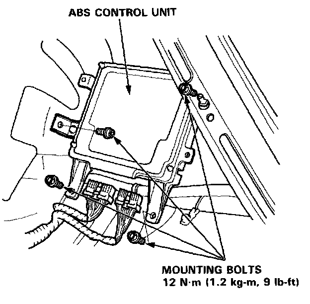

Electronic Brake Control Module: Service and Repair

ABS Control Unit Replacement
1. Remove the rear seat back.
2. Remove the mounting bolts, then remove the ABS control unit.
CAUTION:
- When the control unit mounting bolts are removed, the control unit's memory is cleared.
- Handle the control unit with care. Do not drop it.
3. Installation is the reverse order of removal.
NOTE: After installation, turn the ignition switch on and check the ABS indicator light for operation.